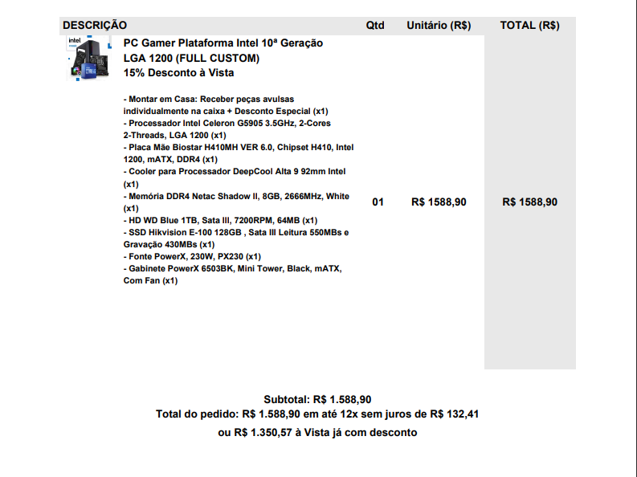
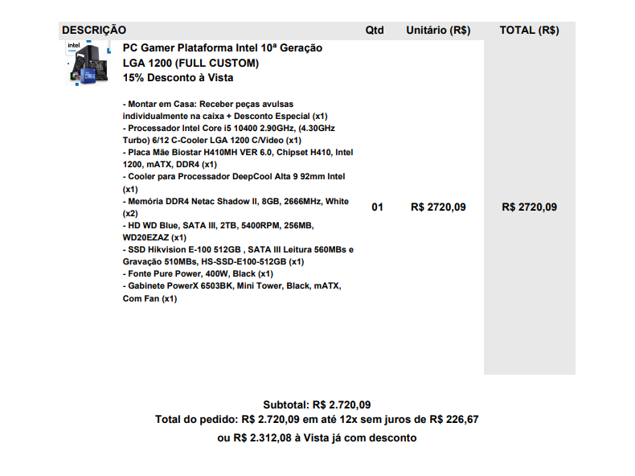
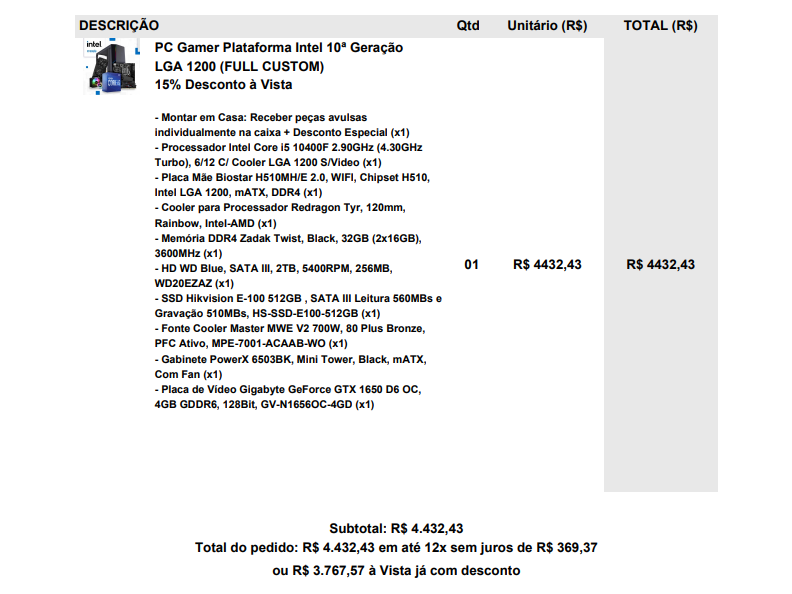

Atualmente existem várias opções de computadores no mercado, desde computadores ruins com preços exorbitantes quanto ótimas configurações com preços acessíveis.
Abaixo podemos ver algumas configurações feitas para cada tipo de usuário e para cada tipo de necessidade.
Perfil 1: Usuário básico, que não possui muitas necessidades, configuração feita para o usuário acessar a internet.
Perfil 2: Usuário médio, utiliza o computador um pouco mais para a área do trabalho, fazendo com que o computador necessite de um pouco mais de desempenho, chegando a rodar alguns programas que para a configuração acima ele teria um pouco mais de dificuldade.
Perfil 3: Usuário de alto nível, utiliza o computador para diversas funções, para jogos, programas pesados, edições de vídeos e etc. Esse perfil necessita de uma configuração um pouco mais atual devido a grande demanda de funções exigidas pelo usuário.
Essas configurações podem ser feitas em qualquer site de vendas de equipamentos gamers na internet hoje em dia, com a maior facilidade do mundo, você só precisa ter conhecimento prévio sobre o produto que está comprando (ou pelo menos pedir ajuda a alguém que possua esse conhecimento), ou vai estar se enfiando em uma furada, levando em consideração que existem muitas “promoções” com produtor que não valem nem 50% do valor que está a venda, então, tome cuidado antes de finalizar sua compra, e sempre procure uma pessoa que possa te auxiliar na hora da compra de um computador!